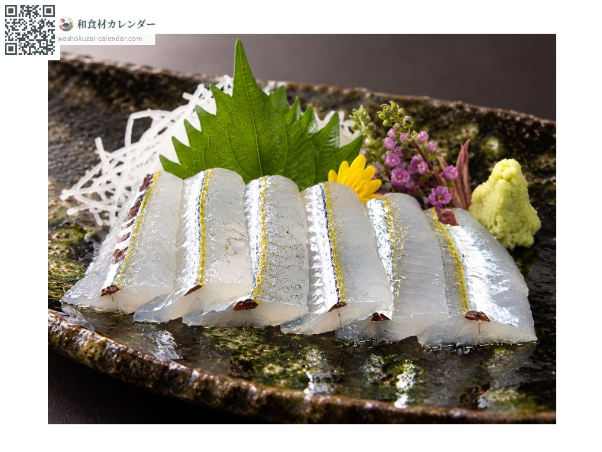
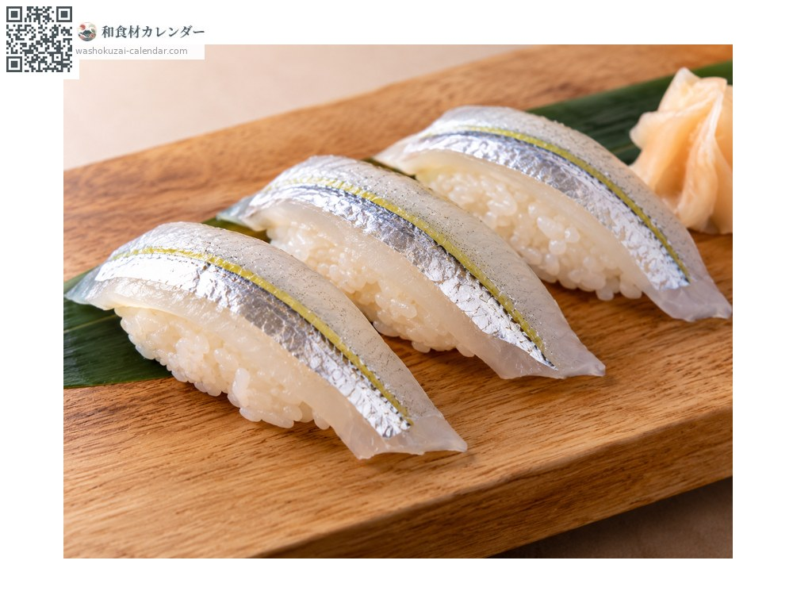
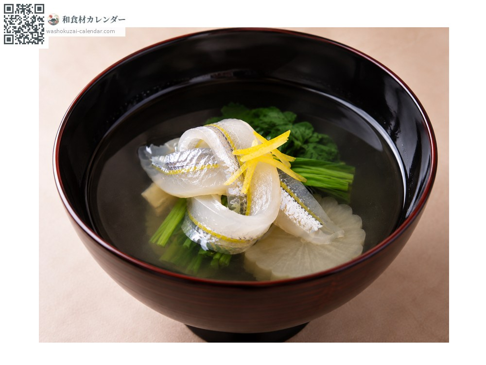
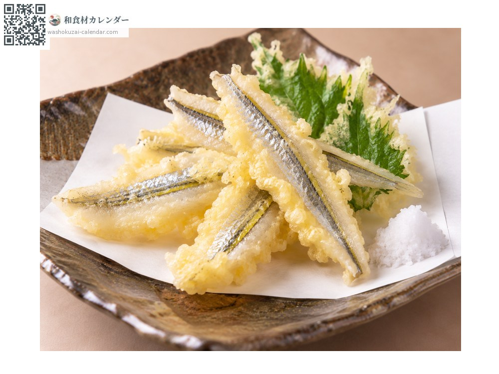

Seafood
Halfbeak
サヨリ さより sayori
Also known assayori
At its best in Mar, Apr, May

When it is at its best
Jan
Feb
Mar
Apr
May
Jun
Jul
Aug
Sep
Oct
Nov
Dec
In seasonAvailable
How to cook

Sashimi
Sliced paper-thin. Light, with a refined sweetness.

Sushi
As a nigiri topping, where its slender form shows well.

In clear soup
Knotted and set in the bowl, for spring menus.

Tempura
Fried in batter, which leaves the flesh light.
How to choose
A bright silver body with a vivid vermilion tip to the lower jaw. Slender and straight.
Storage
It loses freshness quickly. Gut, refrigerate and use the same day.
Main areas
Good to know
A slender fish with a lower jaw drawn out like a needle. The belly cavity is black inside, which has made it a byword in Japanese for someone fair outside and dark within. Valued as a herald of spring, it is sliced thin so the silver under the skin shows.
At their best around the same time
 Japanese horse mackerel
Japanese horse mackerel Pacific herring
Pacific herring Icefish
Icefish Skipjack tuna
Skipjack tuna Flying fish
Flying fish Red seabream
Red seabream Chicken grunt
Chicken grunt Blackspot emperor
Blackspot emperor